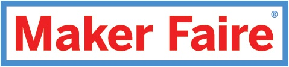
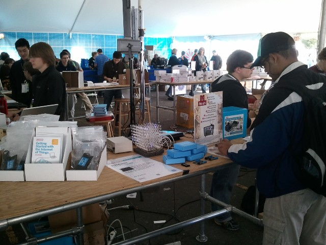
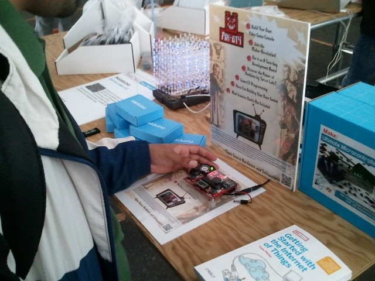

The PIX-6T4 made its debut @ Maker Faire 2011

Thanks to Chris Walker from 'Secret Labs', the PIX-6T4 made its debut at the World Maker Faire 2011 in New York city!
We are honored and thrilled to have been able to contribute to the Netduino community and to have been part of the largest celebration and gathering of Open Source Hardware Makers this year. Chris, who barely got the time to breathe as he was demonstrating the awesomeness of the Netduino, still managed to take a couple snapshots of a gentleman enjoying the PIX-6T4.


We can't wait for the next World Maker Faire! This time, we'll be there in person.
Cheers,
-Fabien & Bertrand